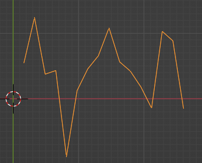

1. Lépés
Először hozzunk létre egy Vonalat Mivel alapból 2 pontból áll egy vonal ezért azt átalakítjuk, majd ahogy azt a tervben írtam deformáljuk egy kis zajjal, az organikusabb hatás érdekében. Ha valamelyik változót kívülről is irányítani szeretnénk azt a Group Input segítségével megtehetjük.

![Blender Geometry Nodes setup divided into two labeled sections: 'Line' at the top and 'Noise' at the bottom. In the 'Line' section, an 'Input' node provides 'Length' to a 'Combine XYZ' node as the X input. The output vector connects to the 'End' input of a 'Curve Line' node. This curve is passed to a 'Resample Curve' node set to count mode with 16 points, and then to a 'Set Position' node as its Geometry input. In the 'Noise' section, a 'Group Input' provides 'H Seed' to the W input of a 'Noise Texture' node set to 4D fBM with Normalize checked. The 'Fac' output of the noise goes into a 'Map Range' node, which remaps values from 0–1 to -1 to 1. The result goes into a 'Multiply' node, which multiplies it by a 'Spread' value from another 'Group Input'. The result is fed into the Y input of a 'Combine XYZ' node, whose output goes to the 'Offset' input of the 'Set Position' node from the Line section.](../media/felhok/nagykep/Vonal_Zajjal.png)
![Blender Geometry Nodes setup with two labeled sections: 'Mesh' at the top and 'Shape' at the bottom. In the 'Mesh' section, a 'Set Curve Radius' node receives input from the bottom Shape section and outputs to 'Curve to Mesh', which uses a 'Curve Circle' node (set to 11 resolution and 0.4m radius) as its profile curve. The resulting mesh is passed to a 'Transform Geometry' node, which scales it using a vector from 'Combine XYZ' (1.0, 0.8, 3.5). In the 'Shape' section, a 'Spline Parameter' node outputs 'Factor' to a 'Float Curve' node with a custom graph. The output of this curve is multiplied twice: once by 2.3 and once by a noise value. The noise is generated from a 'Noise Texture' node (4D fBM with Normalize enabled), with 'W' driven by a 'Seed' from 'Group Input'. The noise result is multiplied with the curve shape and passed back up to the 'Set Curve Radius' node.](../media/felhok/nagykep/AlapalakzatJavított.png)
![Blender Geometry Nodes setup titled 'Main Shape'. It starts with a 'Mesh to Volume' node, set to Voxel Amount resolution (64) and density 1.0, which outputs to 'Distribute Points in Volume' using random distribution and a seed of 0. This node receives density input from 'Group Input'. The points go into 'Instance on Points' to place an 'Ico Sphere' (radius 0.9, subdivisions 2) at each location. The instances are finalized by 'Realize Instances'. For instance scaling, a 'Noise Texture' node (3D, fBM, normalized) outputs a factor, which is remapped using 'Map Range' (from 0.4–1.0 to 0.2–2.0) and connected to the Scale input of 'Instance on Points'. The noise is driven by a Vector input with values Scale 12.6, Detail 2.1, Roughness 0.5, Lacunarity 2.0, and Distortion 0.0.](../media/felhok/nagykep/GömbökJavított.png)
![In this Blender Geometry Nodes setup, the 'Group Input' node connects to the 'Realize Instances' node via the 'Geometry' output. The 'Realize Instances' node further links to the 'Mesh to Volume' node, which also connects to the 'Volume to Mesh' node through its output. The 'Mesh to Volume' node has its settings adjusted for 'Density' at 1.000, while 'Voxel Amount' stands at 32,000. The 'Bounding Box' node is positioned centrally and is linked to the 'Transform Geometry' node, which allows adjustments to its 'Translation' values in the X, Y, and Z axes, all set to 0.000. The 'Volume to Mesh' node has its 'Grid' settings highlighted, featuring a 'Threshold' of 0.100 and 'Adaptivity' adjustments, although specifics are not detailed. To the right, the 'Mesh Boolean' node is configured with 'Intersecting Edges' set to 'Difference', necessitating two meshes as inputs, labelled as 'Mesh 1' and 'Mesh 2', with options for 'Self Intersection' and 'Hole Tolerant' toggled.](../media/felhok/nagykep/Levágás.png)
![In this Blender Geometry Nodes setup, the 'Normal' node is connected to two nodes: first to the 'Less Than' node, which takes in a vector and outputs a boolean result, and second to a 'Multiply' node that multiplies this vector. The 'Dot Product' node, located directly above, provides its vector output to the 'Less Than' node's input along with a scalar float value of 0.300. The 'Normal' node also connects to another 'Normal' in the 'Multiply' node, which further processes the input. Below the 'Normal' node, a 'Voronoi Texture' node generates a texture based on distance and color, with its 3D output routed to the 'Multiply' node, influencing the geometry. The 'Noise Texture' node, also contributing to the overall visual result, connects via its color output, providing further detail through connected scalar and vector inputs. The 'Set Position' node uses the geometry selection from earlier nodes, with the 'Offset' set for adjustments to the mesh. The structure is meticulous, showing a hierarchical flow of how nodes interact within this setup.](../media/felhok/nagykep/ExtraRészletekJavított.png)
![A detailed Blender Material setup includes a Float Curve node connected to a Mix node. The Float Curve node has a Factor input ranging from 0.0000 to 1.0000 and outputs to the 'A' input of the Mix node, which has a Result output. The Mix node's 'B' input connects to a Multiply node that receives a Value of 5.000 and outputs to the Principled Volume node. The Noise Texture node connects to the Mix node, providing a Fac output for blending. It contains a Color input set to 3D fBM and includes several adjustable parameters, such as Scale (12.300), Detail (8), and Roughness (1.000), along with a Normalize checkbox. The Volume Info node connects to the Principled Volume node, providing Color, Density, Flame, and Temperature inputs. The Principled Volume node itself has a Color Attribute and Density output filled with settings including Anisotropy (-0.084), Absorption Color, and Emission Strength (0.000). There are additional settings for Blackbody Intensity, Blackbody Tint, and Temperature (1000 K), which contribute to the final material output.](../media/felhok/nagykep/Material.png)